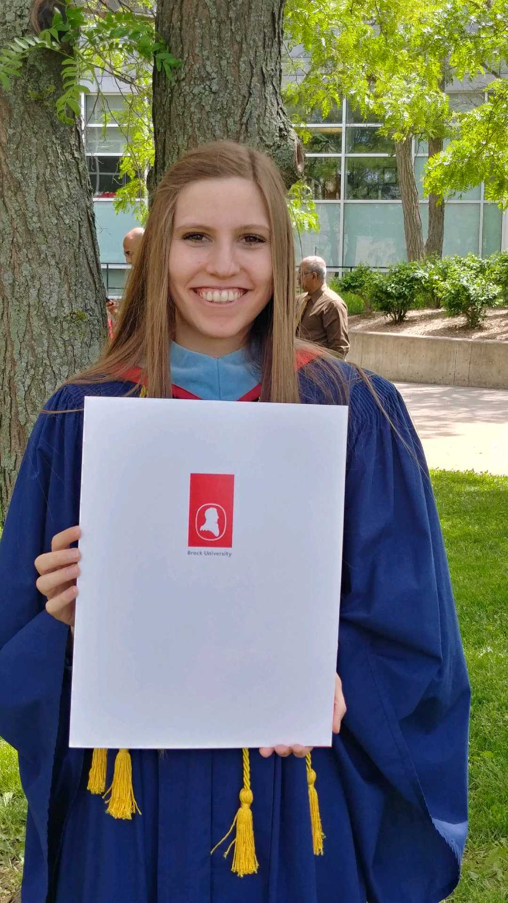
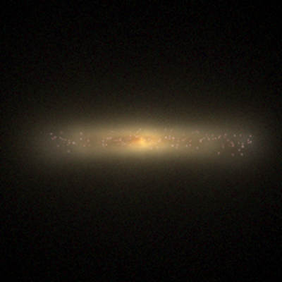

About Me

Education:
B.Sc. Physics (Honours), Brock University (2022);
B.Sc. Mathematics (Honours) with minor in Physics, Brock University (2019);
B.Ed. Intermediate/Senior qualifications, Brock University (2019)
Research Interests:
Cosmology, Galaxies, Relativity
Research

Image Credit: EAGLE Simulations
Exploring the Possibility of Faster-than-Light Travel in Our Universe
Advisor: Prof. Barak Shoshany
Undergraduate thesis, 2020-2021, Brock University
- Using Mathematica and General Relativity to investigate the possibility of Faster-than-Light travel
- Extending the Alcubierre warp drive metric to 5 spacetime dimensions
- Proposal, midterm, and final presentations to Faculty and interested public along with written thesis submission
Analogues of the Milky Way in Cosmological Simulations
Advisors: Dr. Ted Mackereth & Dr. Josh Speagle
Summer Undergraduate Research Program, Summer 2021, University of Toronto
- Used Python and data from the EAGLE suite of cosmological simulations and Illustris TNG300 to identify and analyze Milky Way Analogues (MWAs)
- Determined a "Milky Way-ness" parameter and studied its effect on various properties of the MWAs both at present-day and throughout their formation histories
- Midterm and final presentations, academic poster, and research summary delivered to Faculty and interested public
Poster, Research Summary
Contact
Email: aliciasavelli@gmail.com
Email: as14bq@brocku.ca